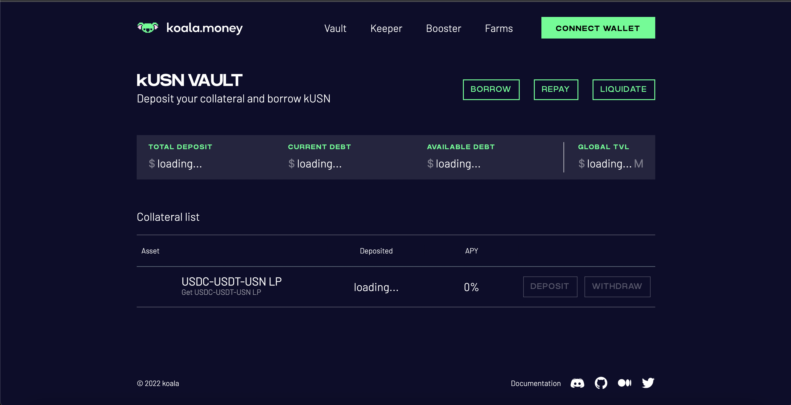
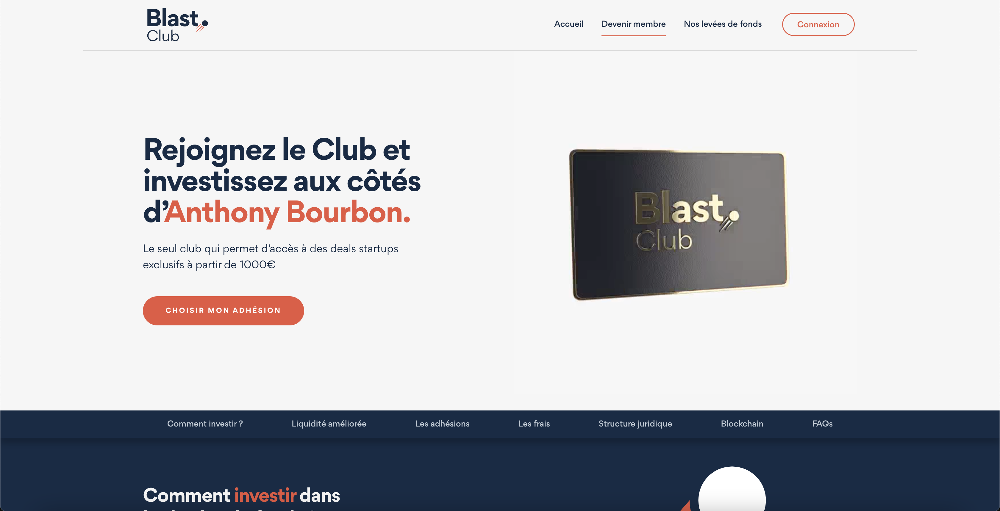
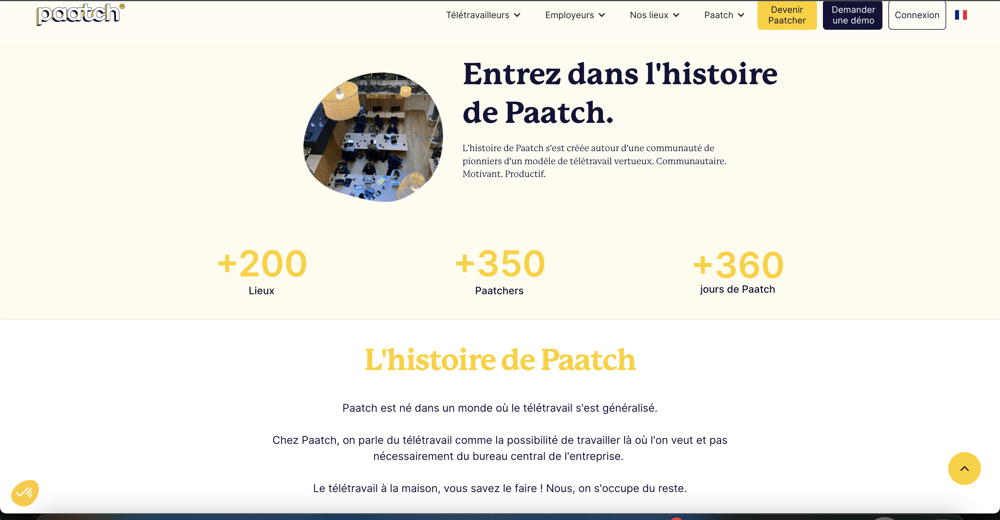
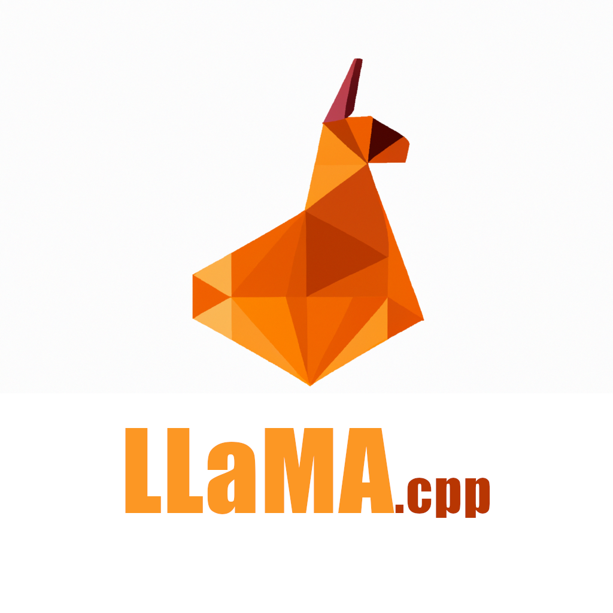

Mathis Boulais
Etudiant dans la programmation / Modélisateur 3D
Mathis
Portfolio
Présentation
01Bonjour, je m'appelle Mathis Boulais, et je suis ravi de vous présenter mon portfolio.
Je suis actuellement en étude pour être développeur informatique. Mon parcours professionnel m'a conduit à travailler sur des projets passionnants, qui m'ont permis de développer mes compétences en développement mais aussi en modélisation 3D comme vous pouvez le constater.
Au fil des années, j'ai acquis une solide expérience en programmation, grâce à des missions diverses et variées qui m'ont permis de découvrir de nouvelles compétences, de nouvelles technologies, et de nouvelles façons de travailler.
Réseaux:


Mon Entreprise
02Site: R3factory
R3factory est une agence de développement travaillant principalement en
-JS natif  -React
-React  -Yarn
-Yarn 
L'une des particularités de R3factory est leur système de gestion de projet. En effet, ils utilisent un monorepo, qui est un référentiel de code unique qui stocke l'ensemble des projets des entreprises pour lesquelles ils travaillent. Ce monorepo offre un avantage considérable en termes de temps et de gestion de projet, car toutes les applications sont stockées dans un seul et même référentiel.
R3factory fournit à ses clients leur propre référentiel de code, ils sont invités sur leur repo et invités à mettre de nouvelles issues, ce qui permet aux entreprises de proposer des changements, de signaler des problèmes et d'ajouter des fonctionnalités de manière transparente. Cela offre une excellente opportunité de collaboration, où les clients peuvent être impliqués dans le processus de développement de leur application et travailler de manière étroite avec R3factory pour obtenir le résultat souhaité.
En travaillant avec R3factory, les entreprises peuvent bénéficier d'une approche innovante et efficace de la conception de solutions web. Avec leur système de monorepo unique et leur approche de collaboration transparente, ils offrent un service de développement exceptionnel qui répond parfaitement aux besoins de leurs clients.
Sites effectués:
- KOALA
 - Paatch
Mes projets en entreprises
03

Au sein de l'entreprise R3factory, j'ai travaillé sur divers projets liés à l'administration système et au développement de logiciels. J'ai utilisé Docker pour mettre en place un système de load balancing qui a permis d'optimiser les serveurs à hauteur de 70% sur un serveur et 30% sur l'autre, en utilisant YAML et Python. J'ai également travaillé sur la mise en place de plusieurs sites locaux qui peuvent être lancés simultanément.
J'ai participé à la réalisation d'un bot avec Slack qui permet aux administrateurs de faire des annonces qui sont ensuite relayées sur leur serveur Slack. Le bot peut transmettre des messages simples, des lieux de réunion avec une date, une heure et des liens pour des informations complémentaires, ainsi que récupérer les ID des utilisateurs du serveur.
J'ai également travaillé avec l'API Tronweb ce qui permet de fournir une interface simplifiée pour interagir avec la blockchain TRON, une fausse money virtuel était mit en place via leur extension afin de pouvoir effectué mes tests.
A l'aide de maquette realiser avec Figma on pouvait avoir un aperçu de ce que devait donner certains sites, donc j'ai aussi travailler sur les sites en questions qu'on a vu précedemment pour tout ce qui est design et backend.
Realisation de docs pour expliquer chaque composant créé, il faut savoir qu'ils créent leurs propres library de composants (carroussel, jauge, vidéos personnalisées), dont certaines que j'ai créées à la main en utilisant des objets. Mon travail consistait également à expliquer et à faciliter l'utilisation de ces composants dans les projets et tout ça sur le site local de R3factory.
Mes projets et compétences
04Modélisation
Twilio
Verification de places disponibles avec Twilio qui permet de fournir des API et me permet de faciliter l'envoie du sms pour dire si oui ou non une place est disponible et puppeteer afin de naviguer en ligne
Threejs
Realisation d'un site en utilisant threejs
Clock
Realisation d'une horloge avec l'heure exact en utilisant js, html/css
Pong vs IA
Realisation d'un pong en utilisant js et canvas contre une IA invincible
Snake
Realisation d'un Snake en python (snake en c++ pas disponible)
Reconnaissance Faciale en utilisant opencv
Realisation d'une reconnaissance faciale, ensuite adapté en jeu de BrickBreaker
App React-native
Realisation d'une application en utilisant expo qui me permet d'avoir un rendu sur mon tel
Autres
J'ai également fait d'autres realisations, comme des jeux via Unity ou UE5, ou encore fait à la main comme un pacman en JS, un encore un bot discord ayant toutes les compétences de moderations, ainsi que des commandes pour proposer des suggestions, ou encore un systeme de tickets et de musiques
Veilles Techno
05Le Machine Learning, ou apprentissage automatique, est un domaine scientifique qui fait partie de l'intelligence artificielle (IA). L'objectif de cette discipline est de permettre à des algorithmes de découvrir des motifs récurrents dans les ensembles de données, grâce à une analyse en profondeur des données.
Source: - Lien
L'un des domaines où le Machine Learning a connu des avancées importantes est celui de la reconnaissance vocale. Grâce à l'apprentissage automatique, les ordinateurs peuvent aujourd'hui comprendre et interpréter la parole humaine avec une précision accrue. Cela a permis le développement de technologies telles que les assistants vocaux, qui sont de plus en plus utilisés dans les maisons et les lieux publics.
Source: - Lien
Le Machine Learning a également connu des avancées significatives dans le domaine de la vision par ordinateur. Les algorithmes d'apprentissage automatique peuvent désormais analyser les images et les vidéos pour détecter des objets, des visages et des expressions faciales. Cette technologie est utilisée dans des domaines tels que la sécurité, l'analyse de données, la surveillance et la reconnaissance automatique de plaques d'immatriculation.
Source: - Lien
En résumé, le Machine Learning est un domaine scientifique important qui a connu des avancées significatives ces dernières années. Grâce à l'apprentissage automatique, les ordinateurs peuvent désormais comprendre et interpréter la parole humaine, analyser les images et les vidéos, et détecter des tendances dans les ensembles de données. Ces avancées ont des applications pratiques dans de nombreux domaines, tels que la sécurité, la surveillance, la reconnaissance automatique de plaques d'immatriculation et l'analyse de données.
Liste d'IA dans le domaine du machin learning
ChatGPT

LLama.cpp
Github Copilot
Contact Me
06Contactez moi
Vous pouvez me contacter via le formulaire ci-dessous